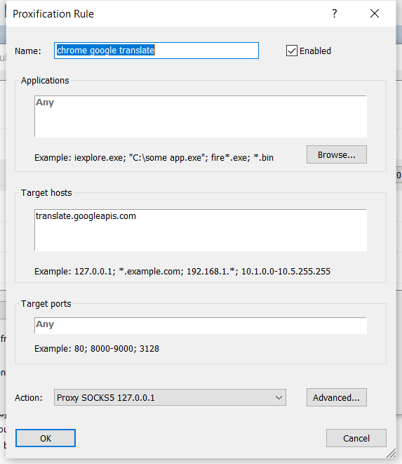

chrome 内置翻译工具流量走代理配置
从下半年开始发现 chrome 系统内置的网页翻译工具就开始抽风，然后彻底不能翻译了，查了下其流量 url 是 translate.googleapis.com，将 url 配置到我的代理列表中走 switchyomega 依然无法访问。
经过查询发现 chrome 翻译的流量只能走系统代理，这就有点麻烦了。开始使用了修改 hosts 的方式指定到国内可用 ip 上，但是使用并不长久，没几天就又不可用了。
家里电脑可以在 openwrt 路由上配置好代理，比较简单，但是想要在本机上直接配置就不太方便了，需要设置系统为全局代理，但我又不想这样做。
今天发现 proxifier 居然可以指定 hosts 配置代理，测试了下居然可行：

如果之前在系统 hosts 文件添加过 translate.googleapis.com 的定向需要先将其删除，设置好后重启 chrome 发现网页翻译可以正常使用了。